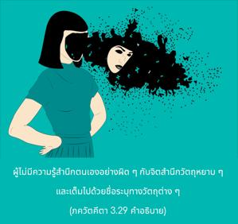
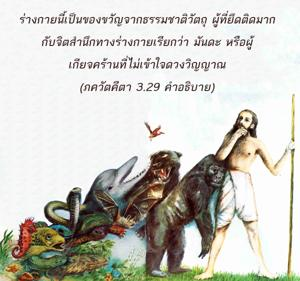
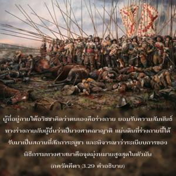
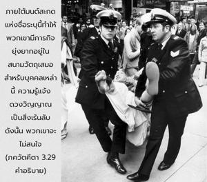

เนื่องด้วยสับสนจากระดับของธรรมชาติวัตถุ ผู้ที่อยู่ในอวิชชาจะปฏิบัติตนอย่างเต็มที่ในกิจกรรมทางวัตถุและเกิดการยึดติด แต่ผู้ที่ฉลาดไม่ควรกังวลกับสิ่งเหล่านี้ ถึงแม้ว่าหน้าที่เหล่านี้จะต่ำกว่าอันเนื่องมาจากผู้ปฏิบัติขาดความรู้




ผู้ที่ไม่มีความรู้จะสำนึกตนเองอย่างผิดๆกับจิตสำนึกวัตถุหยาบๆและเต็มไปด้วยชื่อระบุทางวัตถุต่างๆ ร่างกายนี้เป็นของขวัญจากธรรมชาติวัตถุ ผู้ที่ยึดติดมากกับจิตสำนึกทางร่างกายเรียกว่า มนฺท หรือผู้เกียจคร้านที่ไม่เข้าใจดวงวิญญาณ ผู้ที่อยู่ภายใต้อวิชชาคิดว่าตนเองคือร่างกาย และยอมรับความสัมพันธ์ทางร่างกายกับผู้อื่นว่าเป็นวงศาคณาญาติ แผ่นดินที่ร่างกายนี้ได้รับมาเป็นสถานที่สักการะบูชา และพิจารณาว่าระเบียบการของพิธีกรรมทางศาสนาคือ จุดมุ่งหมายสูงสุดในตัวมันเอง งานสังคม ลัทธิความรักชาติ และลัทธิการเห็นประโยชน์ผู้อื่นเหล่านี้คือกิจกรรมบางประการของบุคคลผู้อยู่ภายใต้ชื่อระบุทางวัตถุ ภายใต้มนต์สะกดแห่งชื่อระบุนี้ทำให้พวกเขามีภารกิจยุ่งยากอยู่ในสนามวัตถุเสมอ สำหรับบุคคลเหล่านี้ความรู้แจ้งดวงวิญญาณเป็นสิ่งเร้นลับ ดังนั้นพวกเขาจึงไม่สนใจ อย่างไรก็ดีผู้ที่ได้รับแสงสว่างในชีวิตทิพย์ไม่ควรพยายามรบกวนบุคคลผู้หมกมุ่นอยู่ในวัตถุเช่นนี้ ทางที่ดีเราควรปฏิบัติกิจกรรมทิพย์ของเราอย่างเงียบสงบ ผู้ที่สับสนเช่นนี้อาจปฏิบัติตนตามหลักศีลธรรมพื้นฐานของชีวิต เช่น ไม่เบียดเบียนกัน และร่วมงานการกุศลทางวัตถุ
ผู้อยู่ในอวิชชาไม่สามารถรู้ถึงคุณค่าแห่งกิจกรรมในกฺฤษฺณจิตสำนึก ฉะนั้นองค์ศฺรี กฺฤษฺณทรงแนะนำไม่ให้ไปรบกวนพวกเขา และเสียเวลาอันมีค่าไปโดยเปล่าประโยชน์ แต่สาวกขององค์ภควานฺมีความเมตตามากกว่าพระองค์เพราะเข้าใจจุดมุ่งหมายขององค์ภควานฺ ดังนั้นท่านจึงยอมเสี่ยงอันตรายนานัปการถึงแม้ว่าจะต้องเข้าพบผู้อยู่ภายใต้อวิชชาเพื่อแนะนำให้ปฏิบัติกฺฤษฺณจิตสำนึก ซึ่งเป็นสิ่งจำเป็นอย่างยิ่งสำหรับชีวิตมนุษย์